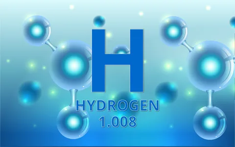
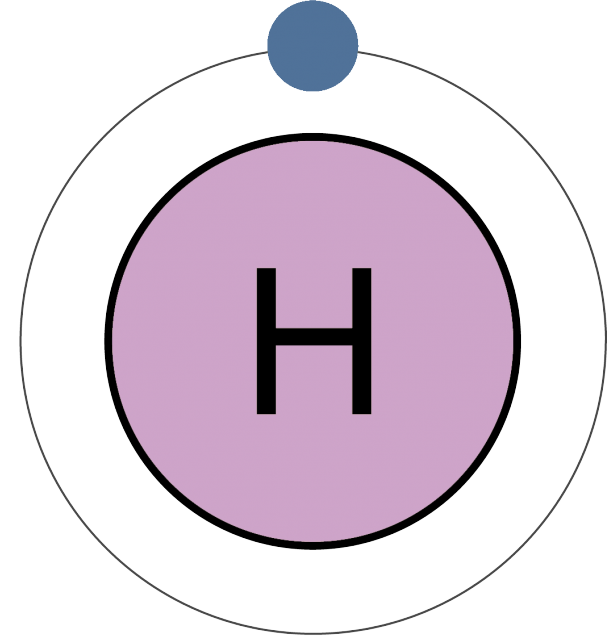
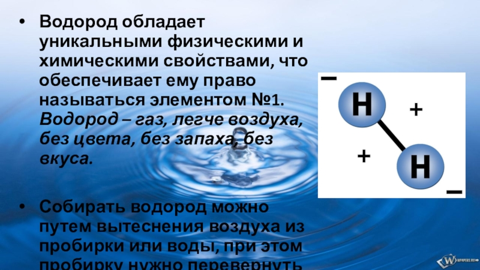

Водород(H)

Водород — химический элемент с порядковым номером 1. Атом водорода состоит из одного протона и одного электрона. Такое строение обусловливает уникальные свойства водорода. В периодической системе водород занимает особое место: подобно щелочным металлам водород обладает способностью отдавать один электрон, поэтому он может быть помещён в главную подгруппу группы; однако, как и галогены, водород способен присоединять один электрон, поэтому его можно поместить в главную подгруппу группы. В соединениях водород всегда одновалентен.

Впервые водород исследован в 1766 г. Г. Кавендишем и назван им «горючим воздухом». В 1787 г. А. Л. де Лавуазье показал, что этот газ при горении образует воду, включил его в список химических элементов и предложил название hydrogène (от греч. ὕδωρ – вода и γεννάω – рождать).
Простое вещество водород представляет собой двухатомную молекулу , в которой атомы связаны между собой ковалентной неполярной связью.

Благодаря своему комплексу физических и химических свойств, водород используется в медицине, в косметике, в пищевой и топливной промышленности. Водород применяется для осуществления атомно-водородной сварки, в производстве гирокомпасов, осветительных и электронных приборов.